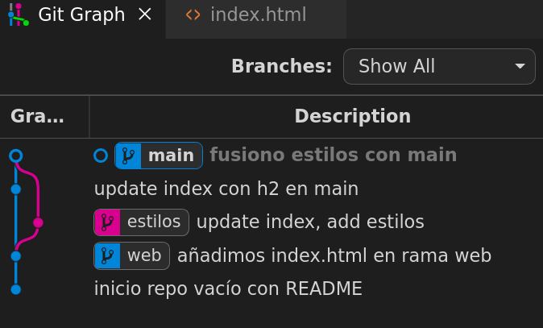
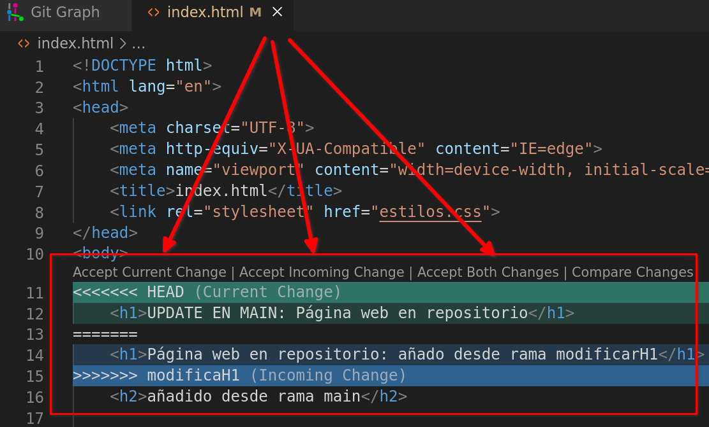
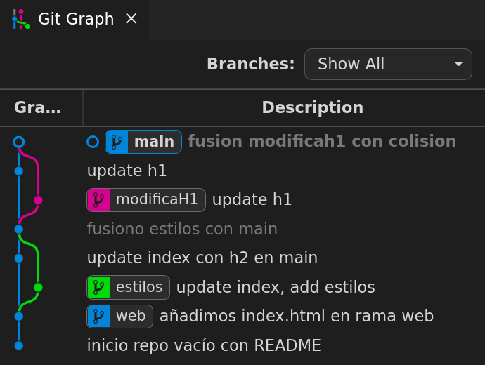

Git, ramas y fusiones (merge)¶
Se muestra una secuencia de ejemplos para mostrar las distintas situaciones posibles en fusiones de ramas.
1. Crear un repositorio local¶
~$ mkdir merge
~$ cd merge/
~/merge$ git init -b main
Inicializado repositorio Git vacío en /home/alu/merge/.git/
~/merge$
2. Fusión tipo fast forward¶
Añada un fichero en el repositorio creado y añada un primer commit en la rama main.
~/merge$ echo "# README" > README.md
~/merge$ git add README.md
~/merge$ git commit -m "inicio repo vacío con README"
[main (commit-raíz) 5f953ae] inicio repo vacío con README
1 file changed, 1 insertion(+)
create mode 100644 README.md
~/merge$
Crear una nueva rama de nombre web, cambiar a ella y crear en ella un fichero de nombre index.html con una cabecera de nivel h1:
~/merge$ git branch web
~/merge$ git switch web
Cambiado a rama 'web'
~/merge$ code index.html
<!DOCTYPE html>
<html lang="en">
<head>
<meta charset="UTF-8">
<title>index.html</title>
</head>
<body>
<h1>Página web en repositorio</h1>
</body>
</html>
Añadir el fichero al repositorio (desde la rama web):
~/merge$ git status
En la rama web
Archivos sin seguimiento:
(usa "git add <archivo>..." para incluirlo a lo que se será confirmado)
index.html
no hay nada agregado al commit pero hay archivos sin seguimiento presentes (usa "git add" para hacerles seguimiento)
~/merge$ git add index.html
~/merge$ git commit -m "añadimos index.html en rama web"
[web b81acff] añadimos index.html en rama web
1 file changed, 13 insertions(+)
create mode 100644 index.html
~/merge$
En la rama web ahora hay dos commits:
~/merge$ git log --oneline
b81acff (HEAD -> web) añadimos index.html en rama web
5f953ae (main) inicio repo vacío con README
~/merge$
Si ahora se mueve de la rama web a main puede comprobar que el único commit coincide con el primero de la rama web. La rama main "no ha avanzado" desde que creamos la rama web (y al listar el directorio en main no aparece el fichero index.html):
~/merge$ git switch main
Cambiado a rama 'main'
~/merge$ git log --oneline
5f953ae (HEAD -> main) inicio repo vacío con README
~/merge$ ls -a
. .. .git README.md
~/merge$
Ahora se procede a fusionar el código de la rama web con la rama main. Esta fusión en la que main no ha avanzado respecto a otra rama es la más sencilla o directa.
~/merge$ git merge web
Actualizando 5f953ae..b81acff
Fast-forward
index.html | 13 +++++++++++++
1 file changed, 13 insertions(+)
create mode 100644 index.html
~/merge$ git log --oneline
b81acff (HEAD -> main, web) añadimos index.html en rama web
5f953ae inicio repo vacío con README
~/merge$
Se observa que ni siquiera hace falta un nuevo commit, simplemente main ahora "apunta" al último commit de la rama web.
3. Fusión recursiva¶
Se prueba ahora una fusión usando una nueva rama de nombre estilos.
Los pasos a dar son:
- en la rama
estilos - añadir un nuevo fichero
estilos.css. - modificar
index.htmlpara que enlace ese fichero de estilos. - en la rama
main - modificar el fichero
index.htmlpara añadir una cabecera h2.
Observe que en dos ramas distintas modificamos el mismo fichero index.html pero en líneas distintas.
Empiece con la rama de nombre estilos:
~/merge$ git branch estilos
~/merge$ git switch estilos
Cambiado a rama 'estilos'
~/merge$ ls
index.html README.md
~/merge$
Se crea en esta rama el fichero estilos.css y se modifica index.html para enlazarlo con la hoja de estilos:
~/merge$ echo "h1 {color:blue;}" > estilos.css
~/merge$ code index.html
~/merge$ git diff index.html
diff --git a/index.html b/index.html
index 4e63d8a..fddc6b0 100644
--- a/index.html
+++ b/index.html
@@ -5,6 +5,7 @@
<meta http-equiv="X-UA-Compatible" content="IE=edge">
<meta name="viewport" content="width=device-width, initial-scale=1.0">
<title>index.html</title>
+ <link rel="stylesheet" href="estilos.css">
</head>
<body>
<h1>Página web en repositorio</h1>
~/merge$
Y se actualiza el repositorio en la rama estilos
~/merge$ git add index.html estilos.css
~/merge$ git commit -m "update index, add estilos"
[estilos 87f9f8b] update index, add estilos
2 files changed, 2 insertions(+)
create mode 100644 estilos.css
~/merge$ git log --oneline
87f9f8b (HEAD -> estilos) update index, add estilos
b81acff (web, main) añadimos index.html en rama web
5f953ae inicio repo vacío con README
~/merge$
Ahora cambie a la rama main y modifique el fichero index.html añadiendo una cabecera de nivel 2:
~/merge$ git switch main
Cambiado a rama 'main'
~/merge$ ls
index.html README.md
~/merge$ code index.html
~/merge$ git diff index.html
diff --git a/index.html b/index.html
index 4e63d8a..83b2e9b 100644
--- a/index.html
+++ b/index.html
@@ -8,6 +8,7 @@
</head>
<body>
<h1>Página web en repositorio</h1>
+ <h2>añadido desde rama main</h2>
</body>
</html>
~/merge$
Y por último actualice el repositorio en la rama main:
~/merge$ git status
En la rama main
Cambios no rastreados para el commit:
(usa "git add <archivo>..." para actualizar lo que será confirmado)
(usa "git restore <archivo>..." para descartar los cambios en el directorio de trabajo)
modificado: index.html
sin cambios agregados al commit (usa "git add" y/o "git commit -a")
~/merge$ git add index.html
~/merge$ git commit -m "update index con h2 en main"
[main 1e39070] update index con h2 en main
1 file changed, 1 insertion(+)
~/merge$ git log --oneline
1e39070 (HEAD -> main) update index con h2 en main
b81acff (web) añadimos index.html en rama web
5f953ae inicio repo vacío con README
~/merge$
Ahora se procede a la fusión de la rama estilos con main. Recuerde que se ha trabajado en las dos ramas. Debe estar posicionado en la rama main. El comando git merge ahora lleva un mensaje de confirmación ya que como verá se crea un nuevo commit:
~/merge$ git merge estilos -m "fusiono estilos con main"
Auto-fusionando index.html
Merge made by the 'recursive' strategy.
estilos.css | 1 +
index.html | 1 +
2 files changed, 2 insertions(+)
create mode 100644 estilos.css
~/merge$
Y observe el nuevo punto de confirmación
~/merge$ git log --oneline
e00d1c4 (HEAD -> main) fusiono estilos con main
1e39070 update index con h2 en main
87f9f8b (estilos) update index, add estilos
b81acff (web) añadimos index.html en rama web
5f953ae inicio repo vacío con README
~/merge$
Vea que la fusión se realiza sin problemas ya que los cambios afectan a distintas partes del fichero index.html. Observe que en el primer ejemplo de fusión se uso como estrategia fast-forward y en este recursive.
En el gráfico de ramas puede observar:
- al hacer la primera fusión la rama
webse unifica conmainen un único hilo (y no crea nuevos commits) - al hacer esta segunda fusión la rama
estilosse bifurca y se reúne posteriormente conmaintras generarse en la fusión un nuevo commit.

en Vscode puede obtener esta imagen en el control de versiones ya incorporado o usando una extensión como Git Graph
4. Fusión con colisión a resolver¶
Por último se analiza un ejemplo de fusión con una colisión que hay que resolver manualmente debido a que en la rama
main y en una nueva rama se modifica la misma línea del fichero index.html.
Para probarlo se crea una nueva rama modificaH1 que modifica la cabecera h1 de index.html
~/merge$ git branch modificaH1
~/merge$ git switch modificaH1
Cambiado a rama 'modificaH1'
~/merge$ nano index.html
Para ver las diferencias del fichero que estamos editando respecto a la versión en el repositorio git diff <fichero>:
~/merge$ git diff index.html
diff --git a/index.html b/index.html
index cb9580d..8ce3391 100644
--- a/index.html
+++ b/index.html
@@ -8,8 +8,8 @@
<link rel="stylesheet" href="estilos.css">
</head>
<body>
- <h1>Página web en repositorio</h1>
+ <h1>Página web en repositorio: añado desde rama modificarH1</h1>
<h2>añadido desde rama main</h2>
</body>
-</html>
\ No newline at end of file
+</html>
~/merge$
Se añade al repositorio en esta rama nueva:
~/merge$ git add index.html
~/merge$ git commit -m "update h1"
[modificaH1 a3d1091] update h1
1 file changed, 2 insertions(+), 2 deletions(-)
~/merge$
Se muestran los commits:
~/merge$ git log --oneline
a3d1091 (HEAD -> modificaH1) update h1
e00d1c4 (main) fusiono estilos con main
1e39070 update index con h2 en main
87f9f8b (estilos) update index, add estilos
b81acff (web) añadimos index.html en rama web
5f953ae inicio repo vacío con README
~/merge$
Ahora regrese a la rama main y modifique la misma línea del fichero index.html:
~/merge$ git switch main
Cambiado a rama 'main'
~/merge$ nano index.html
~/merge$ git diff index.html
diff --git a/index.html b/index.html
index cb9580d..a58f89f 100644
--- a/index.html
+++ b/index.html
@@ -8,8 +8,8 @@
<link rel="stylesheet" href="estilos.css">
</head>
<body>
- <h1>Página web en repositorio</h1>
+ <h1>UPDATE EN MAIN: Página web en repositorio</h1>
<h2>añadido desde rama main</h2>
</body>
-</html>
+</html>
~/merge$
Actualice el repositorio en la rama main:
~/merge$ git add index.html
~/merge$ git commit -m "update h1"
[main 978e6d6] update h1
1 file changed, 2 insertions(+), 2 deletions(-)
~/merge$ git log --oneline
978e6d6 (HEAD -> main) update h1
e00d1c4 fusiono estilos con main
1e39070 update index con h2 en main
87f9f8b (estilos) update index, add estilos
b81acff (web) añadimos index.html en rama web
5f953ae inicio repo vacío con README
~/merge$
Si intenta ahora la fusión indicará que hay un conflicto de fusión en index.html y que debe solucionarlo y luego hacer un commit:
~/merge$ git merge modificaH1
Auto-fusionando index.html
CONFLICTO (contenido): Conflicto de fusión en index.html
Fusión automática falló; arregle los conflictos y luego realice un commit con el resultado.
~/merge$
Si consulta el estado es este momento
~/merge$ git status
En la rama main
Tienes rutas no fusionadas.
(arregla los conflictos y corre "git commit"
(usa "git merge --abort" para abortar la fusion)
Rutas no fusionadas:
(usa "git add <archivo>..." para marcar una resolución)
ambos modificados: index.html
sin cambios agregados al commit (usa "git add" y/o "git commit -a")
~/merge$
indica que hay ramas no fusionadas, y que en el fichero index.html están reflejados los conflictos.
Si visualiza el contenido del fichero que colisiona se han marcado las líneas en conflicto con un formato que:
- delimita la zona de conflicto con
<<<<<<<y>>>>>>>, - y las dos zonas en conflicto separadas por
=======.
Este es el aspecto del fichero index.html en VsCode:
~/merge$ cat index.html
<!DOCTYPE html>
<html lang="en">
...
</head>
<body>
<<<<<<< HEAD
<h1>UPDATE EN MAIN: Página web en repositorio</h1>
=======
<h1>Página web en repositorio: añado desde rama modificarH1</h1>
>>>>>>> modificaH1
<h2>añadido desde rama main</h2>
</body>
</html>
~/merge$
De hecho el editor VScode facilita el trabajo de edición al mostrarnos opciones para aceptar la versión superior, la inferior o ambos cambios:

Tiene dos opciones:
- Editar el fichero, guardar los cambios con la versión correcta, y hacer un add y commit. Ya estaría terminada la fusión
- Otra opción es parar la fusión y volver a la situación previa con
git merge --abort
Si opta por la primera:
~/merge$ nano index.html
~/merge$ git add index.html
~/merge$ git commit -m "fusion modificah1 con colision"
[main 4d3bb41] fusion modificah1 con colision
~/merge$ git log --oneline
4d3bb41 (HEAD -> main) fusion modificah1 con colision
978e6d6 update h1
a3d1091 (modificaH1) update h1
e00d1c4 fusiono estilos con main
1e39070 update index con h2 en main
87f9f8b (estilos) update index, add estilos
b81acff (web) añadimos index.html en rama web
5f953ae inicio repo vacío con README
~/merge$
Una vez fusionado la gráfica de ramas queda:

Recuerde que es posible comprobar las diferencias entre dos ramas antes de hacer la fusión con el comandogit diff ramaA ramaB
~/merge$ git diff main modificaH1
diff --git a/index.html b/index.html
index a58f89f..8ce3391 100644
--- a/index.html
+++ b/index.html
@@ -8,7 +8,7 @@
<link rel="stylesheet" href="estilos.css">
</head>
<body>
- <h1>UPDATE EN MAIN: Página web en repositorio</h1>
+ <h1>Página web en repositorio: añado desde rama modificarH1</h1>
<h2>añadido desde rama main</h2>
</body>
~/merge$
5. Enlaces¶
- Tutorial Sobre git merge en web de Atlassian.